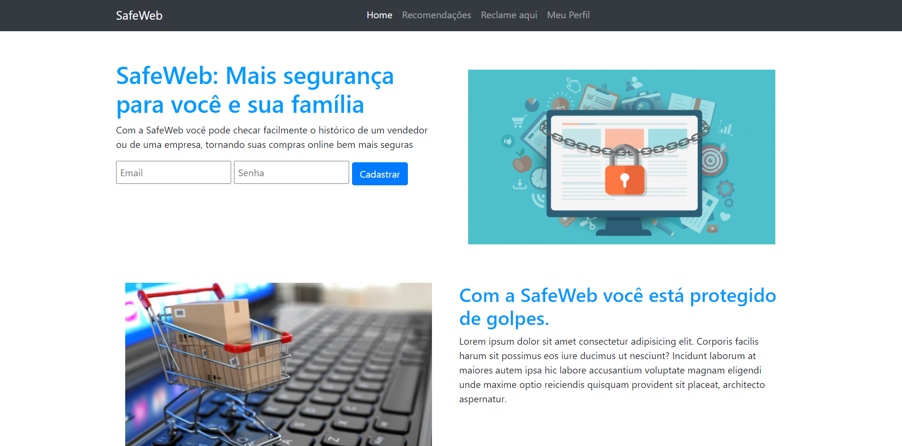
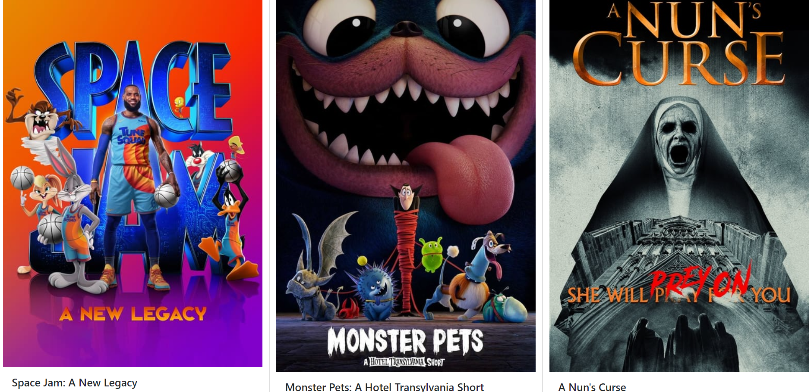
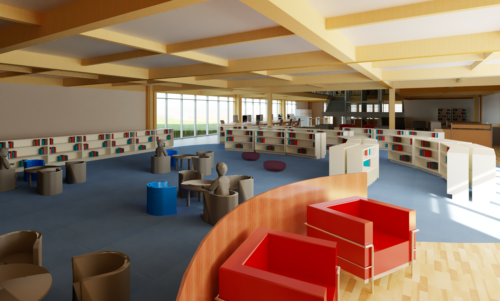
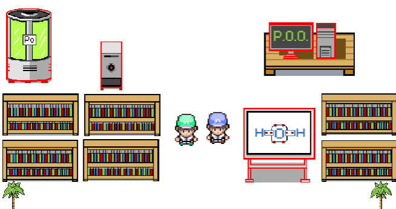
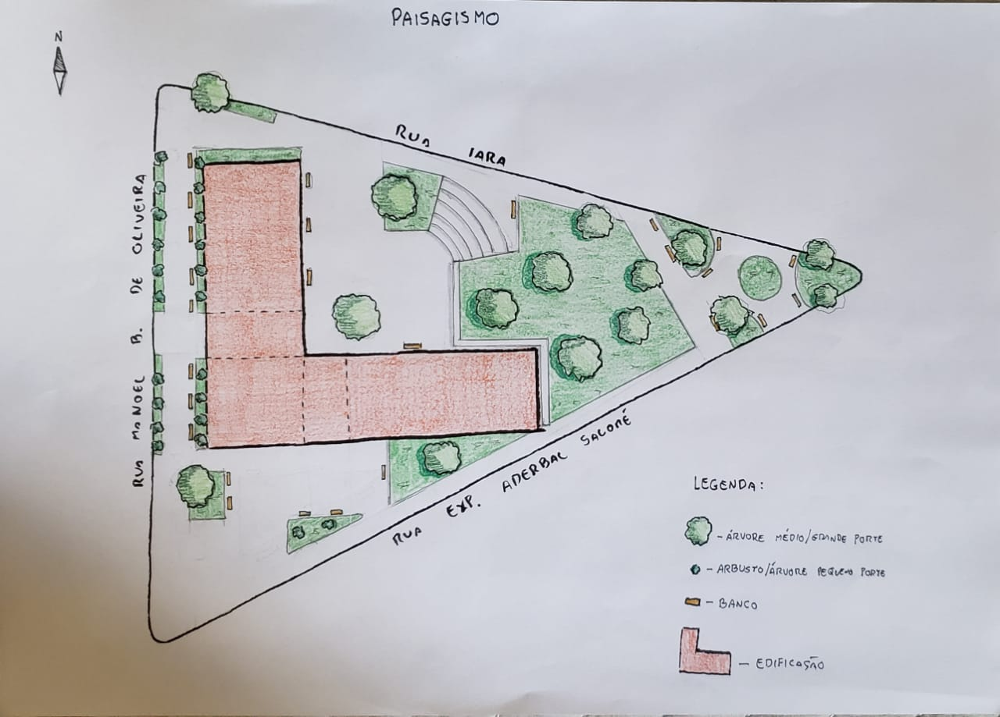
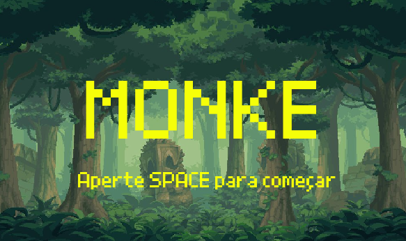

PUBLICAÇÕES:

SafeWeb
Entrega final de TIAW sobre a criação de uma solução contra a vulnerabilidade nas compras online
Clique aqui e veja o site06 de julho de 2021


Trabalho Final de Graduação
Finalmente, depois de muita luta, chegou o dia final de arquitetura!
Clique para ver os renders finais e mais imagens sobre o projeto15 de junho de 2021

CClab
Trabalho de um jogo Multiplayer com tema científico em LIP.
Veja o site aqui11 de junho de 2021

Banca Intermediaria
Croquis, diagramas, e desenhos sobre a proposta trabalhada
Clique aqui para ver mais06 de abril de 2021

M o n k e
Primeiro trabalho de LIP: um jogo no Scratch usando o template do 2pong
Clique aqui para jogar!12 de março de 2021